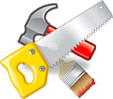

Pinturas
.jpg) A indústria de recobrimentos superficiais é uma indústria antiga. A origem das tintas remonta nos tempos pré-históricos, quando os antigos habitantes da terra registravam suas atividades em figuras coloridas nas paredes das cavernas com tintas grosseiras, que eram provavelmente constituídas por florais ou argilas suspensas em água. . Os egípcios, desde muito cedo, desenvolveram a arte de pintar por volta de 1500 a. C. , dispunham de um grande número e ampla variedade de cores. Em 1000 a. C. , descobriram os antecessores dos vernizes atuais, usando resinas naturais ou cera de abelha como o ingrediente formador de película.
A indústria de recobrimentos superficiais é uma indústria antiga. A origem das tintas remonta nos tempos pré-históricos, quando os antigos habitantes da terra registravam suas atividades em figuras coloridas nas paredes das cavernas com tintas grosseiras, que eram provavelmente constituídas por florais ou argilas suspensas em água. . Os egípcios, desde muito cedo, desenvolveram a arte de pintar por volta de 1500 a. C. , dispunham de um grande número e ampla variedade de cores. Em 1000 a. C. , descobriram os antecessores dos vernizes atuais, usando resinas naturais ou cera de abelha como o ingrediente formador de película.
Nos séculos mais recentes, devido ao grande avanço tecnológico ocorrido, houve o aprimoramento das técnicas de obtenção dos materiais de recobrimento superficial, uma vez que eram utilizados recursos naturais ou técnicas mais complexas para a obtenção destes.
Os produtos das indústrias de materiais de recobrimento superficial são indispensáveis para a preservação de todos os tipos de estruturas arquitetônicas, inclusive fábricas. A madeira e o metal não recobertos são particularmente suscetíveis à deterioração, principalmente nas cidades onde a fuligem e o dióxido de enxofre aceleram a ação deteriorante. Além do efeito protetor, as tintas, os vernizes e as lacas tornam mais atraentes os artigos manufaturados e realçam o aspecto estético de um conjunto de casas e dos seus interiores. Com isso, conclui-se que utilidade e aspecto artístico caminham lado a lado. O Brasil encontra-se como um dos cinco maiores mercados mundiais para tintas.
(Fonte: Brasil Escola – Industria de Tintas e Vernizes – extraído do site www.meuartigo.brasilescola.com)
| Ambientes Sugestivos | Principais Fornecedores |
|  |
Serviços RN
Gesso | Pintura| Eletricista | Hidraulica | Restauração de Portas e Janelas
Telefones (11) 4997-4629 - (11)9465-1560